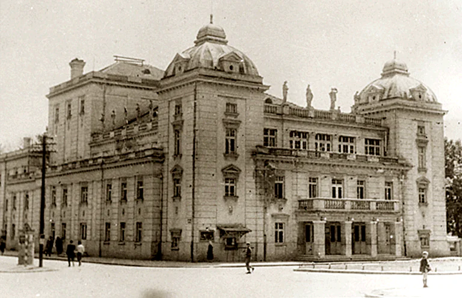
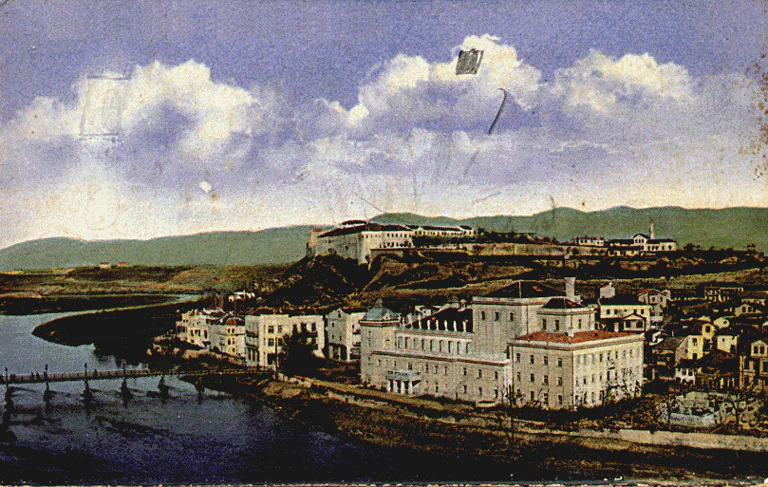
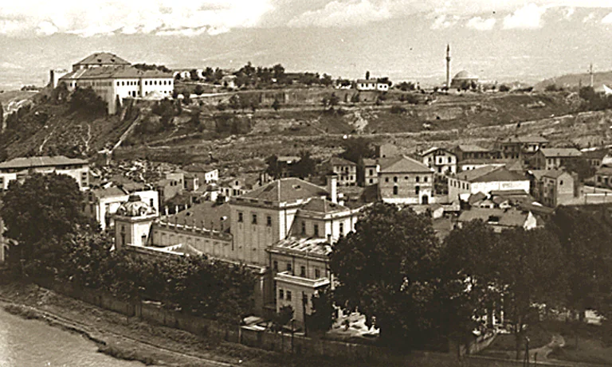
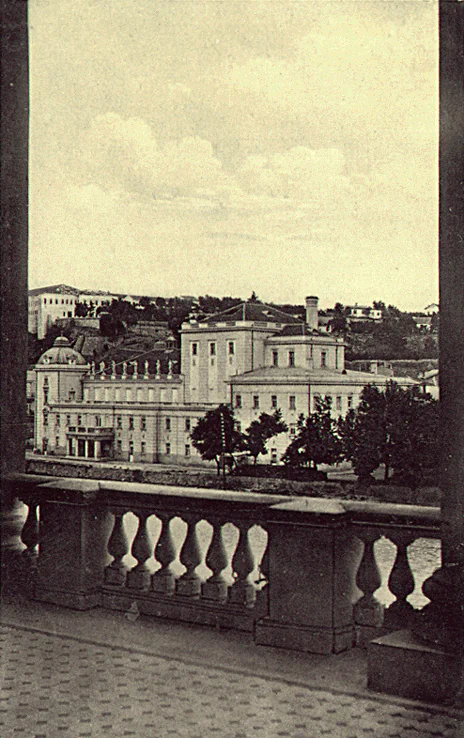

Description
The old "Boges" café, where the first theatre performances were held until the beginning of the 20th century. In 1902 the first theatre was built.

The Turkish theatre, built in 1902. - beginning of the 20th century.

The Turkish theatre with part of the Jewish quarter and the Skopje fortress - Kale. (beginning of the 20th century)

Main entrance of the National Theatre. - the 1930s. It was ceremonially opened on 26 October 1927. Architects: J. Bukovac, E. Brandstein, S. Beljaevski, D. M. Leko, Petar Gočić and V. Mesner.

Main entrance of the National Theatre. - the 1930s

National Theatre with the Skopje fortress - Kale. (the 1930s)

The National Theatre. (the 1930s)

The National Theatre - at night. (the 1930s)

View towards the National Theatre and the little wooden bridge. (the 1930s)

National Theatre. (the 1930s)

View of the National Theatre from the little wooden bridge. (the 1930s)

The little wooden bridge and the National Theatre - the 1930s.

The little wooden bridge and the National Theatre - the 1930s.

The National Theatre and the wooden bridge - the 1930s.

National Theatre - the 1930s.

View from the right bank of the Vardar towards the National Theatre and the Skopje fortress - Kale - the 1930s.

View from the east side of the National Theatre. In the background is the Šar Mountain massif - the 1930s.

The National Theatre and the Skopje fortress - Kale - the 1930s.

A photograph taken from the Officers' Club - around 1930. A beautiful view of the National Theatre, the little wooden bridge and the Skopje fortress - Kale.

The National Theatre with the Skopje fortress - Kale - the 1930s.

The National Theatre, part of the little wooden bridge and some newly built houses. At the top is the Skopje fortress - Kale - the 1930s.

The National Theatre and a group of modern houses and houses of the Jewish quarter. On the right are some of the extravagant houses of the Jewish quarter. Above the theatre is the Skopje fortress - Kale - the 1930s.

The National Theatre and the Jewish quarter, with the Skopje fortress - Kale rising above - the 1930s.

Panoramic view of the National Theatre, with the Kale and its barracks rising above it - the 1930s.

View of the National Theatre from the terrace of the Officers' Club - the 1930s.

View of the National Theatre from the terrace of the Officers' Club - the 1930s.

Panoramic view of the National Theatre, with the Kale rising above it - the 1950s.

National Theatre - the 1950s.
Orientation

On the old orientation map
Photo album


Topic
 Aqueduct4 postcards
Aqueduct4 postcards Kale30 postcards
Kale30 postcards Bridges60 postcards
Bridges60 postcards Quay58 postcards
Quay58 postcards Square46 postcards
Square46 postcards Buildings66 postcards
Buildings66 postcards Christian churches19 postcards
Christian churches19 postcards Muslim buildings33 postcards
Muslim buildings33 postcards Officers' Club29 postcards
Officers' Club29 postcards Theatre28 postcards
Theatre28 postcards Railway station13 postcards
Railway station13 postcards Schools36 postcards
Schools36 postcards Parks12 postcards
Parks12 postcards Markets18 postcards
Markets18 postcards Streets38 postcards
Streets38 postcards Panorama I60 postcards
Panorama I60 postcards Panorama II30 postcards
Panorama II30 postcards Collages55 postcards
Collages55 postcards Floods9 postcards
Floods9 postcards Earthquake27 postcards
Earthquake27 postcards Skopje 200026 postcards
Skopje 200026 postcards